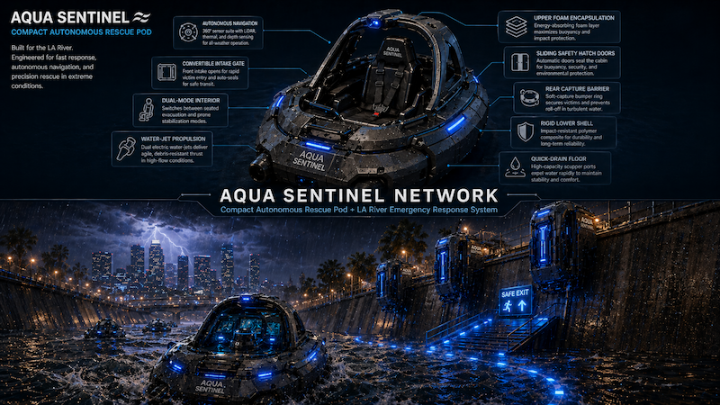

Independent Publication · Architecture · Technology · Research
Original Articles on Architecture, Future Systems, and Design Thinking
HaloCyberLife is an independent publication featuring original writing, concept analysis, visual research, and technology-focused articles on architecture, environmental systems, sound, and design.
Architecture
Air Purification
Sound & Frequency
System Design
Independent Research
Featured Articles & Research
Selected HaloCyberLife writing covering original systems, visual concepts, and independent technical thought.


What Is HaloCyberLife?
HaloCyberLife is an independent website focused on architecture, emerging technology, environmental systems, sound, design concepts, and visual research.
The site is created and maintained by Luis Amaya. It documents original ideas, design reasoning, prototypes, diagrams, and long-form research for readers interested in future-facing systems.
- Original articles and concept analysis
- Architecture and environmental design ideas
- Sound, frequency, and systems thinking
- Visual research, diagrams, and technical storytelling
The goal is to make unusual ideas easier to examine through clear writing, transparent concept labeling, and organized research.
Editorial Focus
HaloCyberLife covers topics where architecture, technology, environment, design, and systems thinking overlap. Articles are intended to add original reasoning, visual explanation, and firsthand project context.
Original Writing
Each article should explain the idea in the author's own words, identify the problem being explored, and provide useful context beyond a gallery, embedded media item, or promotional statement.
Research Presentation
Diagrams, prototype images, and technical themes are placed inside a larger narrative so readers can understand the reasoning, limitations, and intended application of each concept.
